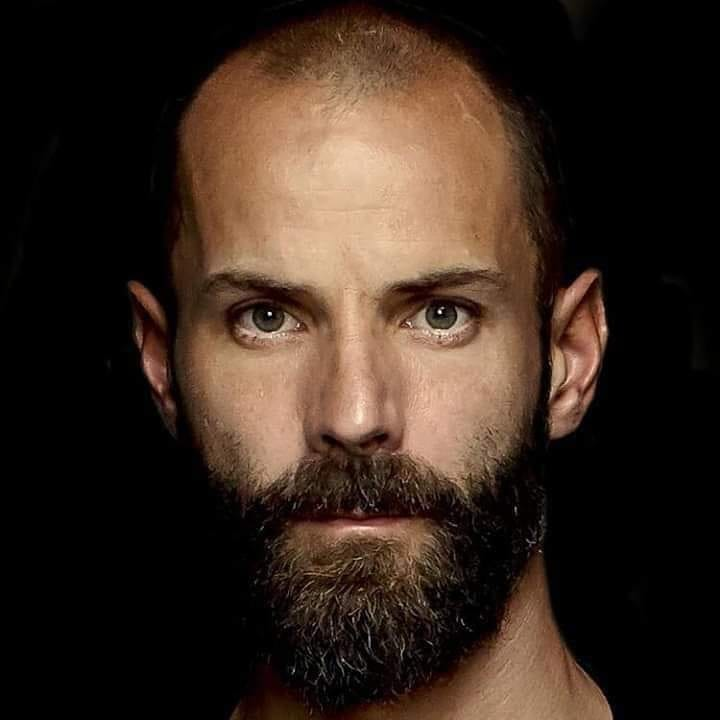

RAMMSTEIN
Rammstein es una banda alemana de metal industrial formada en 1994 por los músicos Till Lindemann, Richard Z. Kruspe, Oliver Riedel, Paul Landers, Christian Lorenz y Christoph Schneider.
Generalmente se clasifica el estilo musical de Rammstein como metal industrial y neue deutsche härte, pero también diversos géneros del metal como el heavy metal, metal progresivo, rock industrial, metal alternativo, groove metal y música electrónica.

Till Lindemann

Richard Z. Kruspe

Oliver Riedel